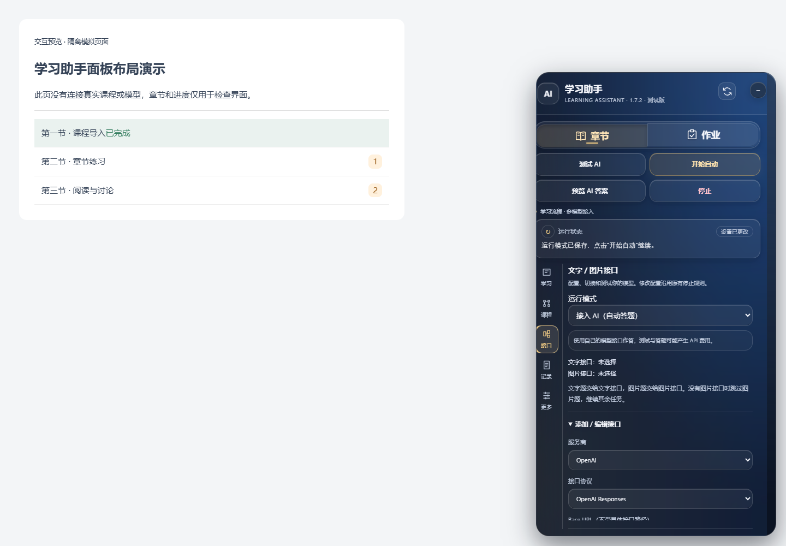

先选连接方式
有服务商 API Key 的，使用本页的接口配置。已经登录本机 Codex CLI 的，读本地 Codex；想使用 WorkBuddy 对应账号的 CodeBuddy CLI，读WorkBuddy 连接。
内置服务商包括 DeepSeek、Kimi、智谱、通义千问、豆包、小米 MiMo、硅基流动、OpenAI、Claude、Gemini。也可以填写自定义兼容接口。
在接口区填这几项
- 服务商：选实际提供 API 的平台。
- Base URL：填平台给的基础地址。使用兼容接口时，不要再把
/chat/completions粘到末尾；脚本会按协议补全路径。部分平台使用/api/v3等地址，不必一律改成/v1。 - 协议：按平台支持的格式选择，OpenAI 兼容、Claude Messages、Gemini 等不能随意互换。
- 模型：从下拉框选，或选择“没有我要的模型，手动填写”，复制控制台的完整模型 ID。
- API Key：使用该平台、该区域和套餐对应的 Key。
- 用途：先选文字题并保存，需要看图时再配置图片用途。

文字和图片分别选
普通文字题走文字用途。题目真正含图片、图表、公式图片或无法还原的字体时，才进入图片流程。页面按钮上的装饰图标不会把文字题变成图片题。
一个接口可以同时负责两种用途，也可以给文字和图片各选一个。保存后，在“已保存接口”里用“用于文字”“用于图片”切换；每种用途当前只对应一个接口。
没有可用图片接口时，图片题无法可靠处理，可能留下待复核项；同页缺题时不会把不完整测验直接当成已完成。遇到图片准备失败，不要让文字模型猜图。
保存后测试
保存设置后，点测试 AI。脚本分别报告当前文字和图片用途的结果。图片用随机数字图单独测试，文字通过不代表图片也通过。
测试会实际调用模型，可能消耗 API 额度或账号积分。服务启动、请求返回成功、测试答案正确和实际题目答对，也是不同的检查。
不确定时先沿用模型默认推理设置，JSON 模式先不勾。确认接口能用以后，再按该模型的支持范围调整。目录中有型号，不代表你的账号一定有权限。
按错误码排查
| 提示 | 先检查 |
|---|---|
| 401 / 403 | Key 是否属于当前平台，账号是否有模型权限，区域或套餐是否匹配。 |
| 404 | 基础地址、模型 ID、区域或接入点。不要把文档网页地址当 API 地址。 |
| 400 | 协议和模型参数。可先关闭 JSON、推理参数，再手动测试。 |
| 429 | 控制台余额、额度与限流。按平台提示等待后再手动尝试。 |
| 返回网页或非 JSON | 地址是否填成服务商首页，协议是否对应，模型是否按所需格式返回。 |
反馈错误码和脱敏提示即可，不需要把 Key 发给维护者。第三方兼容接口和 Ollama 等配置见独立操作说明。
保存、切换和费用
最多保存 30 组接口。保存后 Key 输入框会清空，列表只显示遮挡后的 Key 和最近成功调用时间。配置保存在当前浏览器的油猴存储，不自动同步到其他浏览器。
更换地址、服务商或协议时，需要重新填写 Key，并会停止当前自动任务。确认新配置和用途、测试通过后再开始。
预览、复查、重做中的额外求答都可能增加用量。“停止”只能取消本地等待，不能保证服务商撤销已处理的请求。数据如何发送，见数据和使用范围。